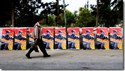

2009-05-20 08:00
In May/June 2009 I travelled to Israel and Palestine. These entries are from my travel diary.
May 20, 2009
In a few days I will be leaving to go on a two-week trip to Israel and Palestine with a group from Interfaith Peace Builders. I need to be able to see with my own eyes what is happening there, but for me the great mystery is why Israelis have made such an extreme right turn over the last 60 years and why the Palestinians are so divided.
After all the history, news articles, and foreign policy papers I’ve read, the reality on the ground will probably not be very surprising. Perhaps I’ll just be one of those who sees what he expects to see. Or maybe I’ll be influenced by a few of the politically-correct fellow-travelers I’ll be visiting with. Or maybe all I’ve presently concluded will turn out to be accurate. Or just maybe – there will be some place, event, or person which significantly alters my thinking on this issue. I guess I’m prepared for any of these things to happen.
As I travel around this disputed land I will be keeping a notebook on what I’ve seen and whom I’ve talked with, when appropriate. My plan is to rework each day’s notes into an entry in this blog, sometimes illustrated with photos or additional information I’ve gathered. I tend to think on paper, and this is how I intend to digest my experiences.
May 25, 2009
We had a very compressed orientation in Washington DC, then went to the airport to catch our flight through JFK to Tel Aviv. Delta cancelled our flight! After all kinds of aggravation, we finally were put up at the Five Towns Motor Inn outside the airport in NYC and we’ll be flying out of here at 8:30pm tonight – if nothing else goes wrong. Apparently 3 raindrops is enough to shut down JFK because the New Yawkers are such wimps compared with us hardy New Englanders.
The people are wonderful and are not a bunch of politically correct teenagers. We’ve got 20, 30, 40, 50, 60, and 70 year-olders, a Mormon, a couple of Jews, a Muslim, a Buddhist, a Quaker, Catholics, Unitarians, etc. These are people who have pets, drink beer, swear, and have equally strong opinions. In short, they’re a lot like me. We’ve had a very good chance to see each other under unflattering conditions, sweating and collapsing after a 23-hour day. But bad travel karma has resulted in a lot of time to get to know one another, and it’s been very nice in a bizarre sort of way.
Our adventure has already begun.
May 26, 2009
We arrived in Tel Aviv in the afternoon and cleared customs easily. Everyone was fairly friendly and the main concern was Swine Flu (whoops, in Israel, the Mexican Flu).
The first thing you notice when you leave Ben Gurion airport, which is a bit east of Tel Aviv, and start the trip up to Jerusalem, is how small the country is. The bus from Tel Aviv to Jerusalem takes about the same amount of time to get from Taunton to Boston. As we went up route 6, the driver pointed out countless Arab towns that had been swallowed into a suburban sprawl that resembles the East Bay a bit.
Everywhere there are hilltop developments, somewhat like the ugly boxes that made Levitttown what it is. You can occasionally see remnants of old Arab towns if you look, and they are very clearly different, simpler architecture – now relegated to empty hollows on the lower parts of the now settled hilltops, cut off from traffic and rotting until they are bulldozed and new settler housing is constructed.
We continued to East Jerusalem to check into our East Jerusalem hotel, the Azzahra. The accommodations were pretty Spartan. No AC, showers barely work, plumbing so narrow that you have to throw your toilet paper away separately. Jerusalem, even the Arab district, is regulated by Israel and only Arabs with special permits can enter. There are separate bus systems to Arab and Jewish neighborhoods, separate license plates, even rolling checkpoints at street corners, and it very obviously reflects the traces of an occupation.
As we entered East Jerusalem, we passed a home that had been taken by armed Israeli settlers and which had an armed lookout post on its roof. This is something out of the Wild West. I haven’t figured out which analogy is most apt – that of Apartheid, or that of the way we treated Indians in the 18th – 20th centuries. Either way, it doesn’t belong in the 21st century.
Tomorrow we are meeting with an Israeli group which tries to stop home demolitions of Arabs’ homes, and we are also staying overnight in a West Bank refugee camp. Later in the week we become more regular tourists and will be spending more time in Israel proper.
At 9:00 I went to bed and fell asleep instantly. In ten minutes I awoke to the mezzuin’s call to evening prayers. It went on for 2-3 minutes and then stopped. It’s probably no worse than living near a fire station, but it is a reminder that when (and if) Palestinians ever have their own state it will probably have an Islamic character.
As for me – I’ve been wondering if religious states of ANY kind are a good thing.
May 27, 2009
We met today with Yahav from ICAHD who gave us a glimpse into how home demolitions work. Displaying a number of maps he discussed how developments like Ma’aleh Adumim are used to slice into Palestinian land in the Occupied Territories. Although the theft of Palestinian land is bad enough, the way in which it is executed is pure evil.
Basically, land is suddenly zoned for “green” or military use and Palestinians almost never win zoning appeals. After 3 years of disuse, the land is declared “abandoned” and becomes state-owned. Thereafter, the state demolishes homes and reclaims the land for Jewish-only developments.
Because Palestinian family units are multi-generational, homes expand with every new generation, often by adding a new floor. The gotcha is that Palestinians rarely obtain building permits for a new floor or wing, so out of desperation they build anyway. The state then declares the house “illegal,” fines the owner the assessed value of the house, plus demolition costs, and bulldozes the home.
We visited the United Nations Office for the Coordination of Humanitarian Affairs. We sat with a group of city counselors from Normandy (France) and listened to a talk on the effects of the Gaza blockade.
We arrived before dinner at the Deheisheh refugee camp outside Bethlehem in the West Bank, where we stayed overnight at a hostel and toured the camp. The camp itself is like a poor neighborhood in Mexico, with unsafe electrical systems, sewage problems, and no trash removal – especially shocking since this is administered by Israel, which should be maintaining some minimal level of care over this subjugated population.
The speakers were very impassioned, but also very helpful in understanding the prospects for a 2 state solution, which seems to basically be zero at this point thanks to not only Hamas, but to Israel, which has virtually cut the West Bank in half with a massive settlement called Ma’ale Adumim which we visited a couple of hours before an armed Palestinian shot at the two security guards who had previously waved our tour bus through their gates. Ma’ale Adumim looks like a really ugly California development and has schools, a junior college, a mall, and 40,000 units – out in the middle of nowhere but specifically located in order to prevent a Palestinian state from ever occurring.
This was a very amazing day and it was a very moving experience to have the cutest little kids say “hello” in English, smile at us, and follow us around despite the IDF patrols that run through this dismal 1 kilometer square ghetto with European faces like ours. I heard a 43 year old mother tell us what she told her son after the IDF killed his best friend in 2002 when the 13 year old threw a rock at them.
I learned that 30-60 percent of all Palestinians have been in prison or detained – not because they are necessarily terrorists, but because the area is under martial law and Israel has the “right” to put people in detention for 6 months at a time without trial, or haul them away for 18 days for simple questioning. No search warrants are ever required.
This has apparently been a great success in making people hate Israelis and teaching them Hebrew. The reasons Palestinians give for these arbitrary detentions are (1) fishing for intelligence, (2) disrupting demonstrations which would be legal elsewhere, (3) seeing who they can turn to collaborators.
I had a nice lunch in a falafel restaurant with the tour guide, a cultured Arab man who seems to know everyone in Jerusalem. While we were eating near the Damascus Gate, we saw a single settler being accompanied by two armed guards through the crowds on the corner. In contrast, here I was having a nice lunch and a good conversation with an Arab who knows full well I am a “Yehudi”. The Palestinians really don’t have a problem with Jews. It’s the Occupation they are fighting.
May 28, 2009
Today we got up and drove to Bethlehem for a bit of sightseeing, but also an ambitious set of meetings.
Our first meeting was with Zougbi Zougbi, who runs the Wi’am Center in Bethlehem, a beautiful Arab city. Zougbi is a city counselor and the director of the center, which provides family services to children and women, as well as mediation and conflict resolution based on a pre-Islamic Arab form of mediation called sulha, which involves concluding the agreement with a cup of coffee.
In Zougbi’s view, the occupation has been devastating to families, particularly women. He supports Abbas and said that Abbas is doing a generally good job of keeping peace talks going and that the relationship with the US and Europe has been beneficial, although he laments the one-sided relationship with Israel. It occurred to me that the US was truly wasting an opportunity to befriend the Arab world. Zougbi criticized Zionism as being at odds with a Judaism previously respected by Muslims. “God is not a real estate agent.”
We asked him if the Two State solution was dead, and he suggested that it was. We asked about Hamas and he asked us in return if we’d like to talk to a fellow city counselor from the [political, not armed] Hamas party.
The Hamas city counselor, Saleh Shoker, turned up about a half hour later and answered our questions. From the banter between Zougbi and Saleh, it resembled the joking and arguing between, say, a Republican and a Green Party member.
Saleh admitted they were militant, but asserted they were not violent by nature, although he said, “Sometimes you need to wage war to have peace,” sounding amazingly like Israelis we had talked with. “How can I talk to someone who holds a gun to me and still talks peace,” Saleh said of Israel.
I asked him if Hamas could ever support a Two State solution (which Hamas has previously suggested it might by supporting the Saudi Proposal), and I didn’t get much of an answer. He suggested that the world should first ask Israel to stop the occupation. When pressed repeatedly, Saleh said that he thought there was a remote possibility if Israel were to return to the 1967 borders, but said that Israel never would do this. He treated us like naive fools for even thinking it was a possibility. He could be right. The settlements we saw today are designed precisely to derail any possibility of two states and, thus, any hope of peace.
In the afternoon we drove down the street to the Palestinian Center for Residency and Refugee Rights. We met with the communications officer, Hazem Jamjoum, who discussed the mechanics of how the occupation strips Palestinians of their land and the history of the dispossession of Palestinians from their homes and villages in 1947-1948, resulting in 750,000 refugees who could never return to Palestine.
Before Israeli independence, Jamjoum maintains, the Haganah and paramilitary groups Stern and Irgun ruthlessly targeted and terrorized people in 535 villages through a plan called “Plan Dalet” and has subsequently practiced ethnic cleansing through more bureaucratic methods, involving Jewish National Fund land trusts, zoning regulations, and the racist application of Military Order 125, permitting the state to annex land for military use. He suggested a number of resources, including books by Ilan Pappe. He pointed to the Koenig Report of 1976 as an example of explicit plans for ethnic cleansing of Palestinians.
May 29, 2009
Today was an excellent view into how progressive Israelis think. In the morning we drove to the Erez checkpoint into Gaza and took photos of the elaborate security measures in place, then drove a few miles into Sderot to meet with a couple of members of a group called “Other Voice”. We met with Nomika Zion and neighbor Eric Yellin at Zion’s home. On the way into Sderot we saw the ubiquitous yellow and pastel blue bomb shelters every hundred yards or so, and we noticed that the city was fairly empty.
Yellin and Zion are founders of Other Voice, which is calling for peace between Palestine and Israel despite having first-hand experience with Qassam rockets. Zion began by explaining what her collective does, her family’s relationships to Zionism and kibbutzim, and leaving the kibbutz to establish an urban collective.
She discussed the people who make up Sderot – a large Uzbek population, Ethiopians, Moroccans, Palestinian collaborators who were allowed to leave Gaza, and a variety of social progressives and religious groups including Chabadniks. The one thing that unifies this disparate community is the fear of rocket attacks. From 2007 to 2008, Zion says, roughly 10-60 Qassam rockets per day were lobbed at Sderot.
Because these homemade weapons were so unpredictable, no one ever knew when they would hit and the bombings started at 7:00 in the morning, just in time for school. Zion reported that virtually everyone in the community suffered, continues to suffer, from Post Traumatic Stress Disorder. For 3 or 4 years, residents had been sleeping in “safe rooms” which altered family dynamics, intimacy, and broke down even people’s immune systems (we heard similar complaints in the Dheisha refugee camp regarding surprise IDF raids which occur sometimes every night or every other night).
Zion recounted the moral dilemma of a parent transporting a van with her and other children to school when it suddenly became necessary to take all the children out of their safety seats and rush them into a a bomb shelter. Which one to take first or leave last?
She said that Israel had become a much more violent and racist society, that most Israelis didn’t even want to know Palestinians. “No voices, no faces, no names.”
She described Gaza as a ghetto and said of Gazans, “they are not our enemies, they are our neighbors.” Zion recounted the days when the Moroccans of Sderot would visit Gaza to do their shopping and when there were much closer relationships between Jews and Palestinians. Zion pointed out how the blockade of Gaza had cut Palestinians off from moderates in the West Bank, had starved them, and driven them into the hands of Hamas, for whom their situation was merely a political opportunity. Desperate people will grasp at anything, and the Israeli government’s actions were incredibly stupid.
In Zion’s view, it was in Israel’s interest to stall peace. “The greatest fear of the Israeli leadership is peace,” she said. Eric Yellin, who described himself as an “ambivalent Zionist,” discussed his wartime blog a bit, then sketched a brief portrait of the politics in Israel. According to Yellin, the left virtually dissolved after Oslo, when suicide bombings increased, after the assassination of Rabin, with Barak declaring no partner in peace, with the second intifada, and the rise of Hamas.
We then drove to nearby Kibbutz Zikim in Hof Ashkelon and met with Arieh Zimmerman and Mayan Dror. Arieh gave us a history of the kibbutz from its origins from the Hashomer Hatzair until the present, including the various products its members have produced. Zikim is one of only 80 socialist kibbutzim remaining in Israel (200 have become privatized).
Because of its proximity to Gaza, the kibbutz has been hit by numerous Qassam rockets, resulting in 7 injuries, including those of 2 children. Over the past 7 years Zimmerman estimates that 1000 rockets have been launched from Gaza. The daycare center at the kibbutz is covered by a concrete shell to protect the children within.
Despite the attacks, Zimmerman is quick to point out that “we’re not David anymore, we’re Goliath”. He blames the government for not acting to end the occupation. In Zimmerman’s analysis, the only solution is for two states to exist, and for Jerusalem to be divided. Both Zimmerman and Dror pointed out that the kibbutz has actually had Arab members.
Zimmerman also faults Israel’s ultra-Orthodox, which represent only 12% of the population, for exerting a disproportionate influence on Israeli politics, which has resulted in racist settlement policies designed to benefit them to the detriment of Palestinians.
When I asked him why Israel’s Left and progressive ranks have thinned, Zimmerman offered two reasons: (1) that the political pendulum swings from time to time, and (2) that the Labor party was almost single-handedly responsible for the collapse of the Left because smaller leftist parties like Meretz were joined at the hip with it through coalitions. After the unilateral Gaza withdrawal, Barak delivered the message that Israel had no partners in peace with the Arabs and apparently the majority of Israelis bought it.
Even though Zimmerman acknowledges that Hamas (as opposed to the people of Gaza) may not be motivated in peace, neither is the Israeli Right. He wrote me, “Israel, being the stronger in this conflict between two peoples bears the onus of making the greater effort in making peace with our Palestinian neighbors. We ought to have a government and politicians capable and desirous of problem solving rather than being so energetic in demonstrating their arrogance and pandering to […] right wing extremists.” The problem, as Zimmerman sees it, is that no one is a partner for peace at the moment.
Still, the kibbutzniks have managed to preserve their sense of humor. Collecting fragments of Qassam rockets and plough disks, resident artists fashioned a massive menorah from them, proclaiming both their resilience and their belief in turning swords into ploughshares.
I left Ashkelon beginning to understand the extent of the disarray of the Left in Israel.
May 30, 2009
Today we drove through the Judean desert from East Jerusalem to Nazareth. Along the way we saw many different villages, including Jericho, which has been completely cut off from the highway by a large trench. Across the highway are IDF observation posts with sniper nests. The amount of militarization in Israel and its territories is truly troubling.
In Nazareth we met with Nabila Espanioly, the director of an advocacy center for women and families. Espanioly gave us an overview of the center’s services, mainly funded via European NGO’s and not Israel. She told us that Nazareth is about 4% Jewish, 20% Christian and 76% Muslim.
Nazareth was spared in 1948 because a Canadian officer who had been instructed to destroy the city understood the affection that Christians had for the city and demanded that the order be given in writing. The written order never came. Nazareth remained under military rule until 1966 (as much of the West Bank still is).
In 1948 4% of the land in and around Nazareth was Jewish, while today it is 97%. Despite the fact that Palestinians represent 96% of the population, they receive only 4% of so-called “development” funding – for education, health, and social services – that Jewish Israeli cities receive. The Bedouin population is not even counted and there are 52 “unrecognized” villages around Nazareth.
60% of those living in poverty are Palestinians, and roughly 20% have left Israel in the last 20 years, particularly Christians, who have often had a bit more money than Muslims, and for whom their land is not an essential component of their religion.
Later in the day we drove to Karmi’el, a Judaization project (settlement) for approximately 60,000 Israeli Jews. It is built on the ruins of a Palestinian village of Suhmata. The area looks a bit like Scotts Valley in California and, like it, is home to a high-tech park with various defense industries. Kibbutz Zuriel is also built on Suhmata.
At the far end of the settlement is a Bedouin camp of 3 families without water, electricity, or heat. We visited one family whose gas-powered generator was supplying their heat and electricity. Their compound was entirely surrounded by concrete, but they were still hoping to preserve their land and way of life in the face of development.
We drove on to the Arab town of Sakhnin, a mixed town with 5 mosques and 3 churches. Like Nazareth, 95% of Sakhnin’s land was confiscated after 1948. Men in the town now have to commute to Tel Aviv, Haifa, or Netanya to find work. While the national unemployment rate is about 11%, among Arabs it is closer to 30%.
In Arab towns where Palestinian citizens of Israel live, police officers are almost always Jewish and do not live in town, but on nearby Jewish settlements. In the evening we had dinner with a Palestinian couple in an outdoor structure they called their “tent”. But it was actually made of reeds and reminded me of a sukkah where Jews observe sukkot.
May 31, 2009
Today we traveled to Tel Aviv to meet with Dani Adamansu of the Israel Association for Ethiopian Jews, which originated as an American organization.
The history of Ethiopian Jews, or Beta Israel, is rather interesting. They believe they are the descendents of the Lost tribe of Dan or, alternatively, Jews who went into exile after the destruction of the first temple in 563 BCE. There they resisted conversion to Christianity and retreated to the northern province of Gonder where they maintained a pre-Talmudic type of Judaism, observed laws of Kashrut, and studied Jewish texts.
As early as the 16th century, the Chief Rabbi of Egypt observed that they maintained Jewish laws (Halachah) and viewed them as certainly Jewish. The Beta Israel thought of themselves up until that point as the only surviving remnant of Israel. As a religious minority, and simply as a religious community, they were mistreated by the Mengistu regime during the 1980’s, during which many of the community were forced to escape via Sudan.
In the 80’s Operation Moses brought 8000 Ethiopians to Israel and in the 90’s Operation Solomon brought over 14,000. Between these massive airlifts, many actually walked to Israel. As Adamansu put it, “we were following in Moses’ footsteps.”
Today about 85% of the 120,000 Beta Israel in Ethiopia have emigrated to Israel. They regard themselves as orthodox, highly patriotic, but are not completely accepted in Israel.
They have settled in roughly 20 cities in Israel, with many in the Negev, and they are struggling with new immigrant issues, including institutionalized racism, employment, housing, and educational problems.
We asked Adamansu if the Ethiopian community felt it had anything in common with Arab Israelis. The response was “no”, which many Palestinians and Arab Israelis agreed with. In many cases, Palestinians reported receiving the roughest treatment from Ethiopian IDF soldiers.
Adamansu shared the opinion we were beginning to see as a widespread one that the Arab armies were greater than Israel’s. “We are not the strongest army in the Middle East,” he said.
We asked Adamansu if he thought there could ever be peace with Arabs or accommodation for sharing the land. He answered the question by quoting the Talmudic debate (Bava Metzia62a) between Rabbis Akiva and Ben Petura on the ethical obligations of a man in the desert with a friend and only enough water to save one of them. Petura had maintained that “Better both should drink and die than that one see his friend’s death.” But Rabbi Akiva disagreed, stating that the owner of the water had only an obligation to save himself.
We asked if the Ethiopian community included progressives who were concerned at all with the plight of Arabs. “Not really.” Most immigrants were concerned more with poverty, clothing, housing, and education, he said.
May 31, 2009

We met in the late afternoon with Ruth Hiller, who lives on Kibbutz Haogen about 10 km north of Netanya. Hiller was originally from California, and has lived in Israel since 1972. She came out of a religious Zionist movement and moved to Israel to live out a “romantic, idealistic, activist life of nation-building.”
Hiller lived a typical Israeli life, raising a large family (6 children) and sending daughters into the military. But in 1995 her 15-year-old son came to her and told her he was a pacifist. Although it was possible to ask for a non-combat assignment within the military, he did not want any part of the military and was looking for the right to do some kind of alternative civilian service.
After over 20 years in Israel, Hiller was confronted with a clash between national and personal, family values. She discovered that options for Conscientious Objectors were limited in Israel to religious reasons (only the ultra-Orthodox have the right not to serve). She looked for models and patterns in other countries. She talked to Americans, studied the South African Black Sash movement, and went through the process of trying to find a lawyer who would handle her son’s case.
Hiller soon discovered that even Israeli progressives and civil libertarians could not always be counted on to help, and it took the help of a former Meretz Member of the Knesset to find a lawyer who would finally help the family.
In the Israeli military, a “profile” is a person’s military status. What Hiller was looking for was a “new profile” – a civilian designation, not a military one, which would permit young people to serve the nation totally outside the military. Ultimately years of personal efforts led her to establish “New Profile”, which provides information to young people who are looking for alternatives to military service. New Profile networks with other organizations: Yesh Gvul, Combatants for Peace, and Shministim.
Among New Profile’s goals is the “Civil-ization of Israeli society.” New Profile finds Israeli society highly militarized, dangerously militaristic, and she sums up the relationship between society and military with: “Israel is not a country with an army, rather it’s an army with a country.”
The number of soldiers walking around with guns is shocking, though not to Israelis who have become inured to the sight. Presidents, Prime Ministers, and Knesset members are often ex-generals. The surplus of soldiers is being used as teacher’s aides, which exposes children to guns and uniforms at an early age.
At 40-45 military officers can retire and many become teachers, principals, and this in turn offers unlimited access of the military to schools. These teachers take students on week-long boot camps, and then to Auschwitz. Thus, Hiller argues, indoctrination and militarization begin in childhood. And she points out that the arms industry is the largest industry in Israel and so even in employment the militarization continues.
From childhood through retirement, the main business of Israelis is war-related and, despite prevailing views, this only serves to make Israel less secure. Hiller observes, “in attempting to create a safe haven for Jews, we’ve succeeded in making this the most dangerous place for Jews.”
Hiller notes a disturbing trend in shutting down public discussion of militarization. New Profile was recently targeted by the government. Eleven members were interrogated, four had PC’s confiscated, and all were slapped with a ban on talking to political associates for 30 days. New Profile has since moved their website to Europe.
June 1, 2009
Each day of this trip has felt like a week. This was no different. We left East Jerusalem this morning and traveled into the West Bank to a small office in which a German film crew were setting up cameras. Our dialog with the speakers was about to be filmed.
Our meeting this morning took place with two men from an organization called Combatants for Peace. We were here to listen to Bassam Aramin and Rami Elhanan, both of whom had lost daughters to political violence. Aramin’s daughter was killed by an Israeli soldier’s rubber bullet, Elhanan’s by a suicide bomber.
Aramin began by sketching a typical progression to Palestinian radicalism, from trying to display the Palestinian flag at 13, to throwing rocks, to reaching for the gun at 16, to ending up in an Israeli prison at 17.
During this time, as with many Palestinians in Israeli jails, he had the chance to study and reflect. He recalls watching a Holocaust movie and initially feeling a flush of hatred, seeing it as revenge on the Jews.
But then he began to see the parallels between Palestinians and Jews, and came to view the enemy with a certain degree of sympathy for their own historical suffering. He started talking with one of his jailers, and he describes the relationship they forged as strange, but a friendship nonetheless.
In 1992 he left prison and began to hear about Israeli refuseniks who wouldn’t serve in the Occupied Territories. In 2005 hear got a call from one of these ex-IDF soldiers and he describes their encounter as “the most difficult meeting of my life.”
But, Aramin went on, “we had a common enemy – the Occupation and fear.” In 2007 his daughter Amin was killed by a rubber bullet fired from 15 feet away by an IDF soldier. Aramin could have easily returned to violence, but instead he chose to pursue reconciliation.
Then Rami Elhanan spoke. He smiled softly at Aramin and said, “we have an alliance which is sealed by the blood of our daughters” and then told his own story.
A 7th generation Jerusalemite, Elhanan served in the 1973 war, lost friends in that war, and returned to normal Israeli life. In 1997 that life suddenly ended, and a new one began. His daughter Smadar went missing and was later confirmed dead in a suicide bombing on Ben Yehuda street.
A year went by, then Elhanan met Yitzhak Frankenthal, the founder of Parent’s Circle, a man that Elhanan had first pegged as a bigoted religious zealot but who instead turned out to be quite the mensch and one who changed his life. Later Elhanan recalled that Frankenthal was one of many people who had paid his condolences while the family sat shiva for his daughter.
Like his Palestinian counterpart Elhanan could easily have chosen revenge, but instead chose reconciliation. “This is the way, the other way leads to nowhere,” he said simply.
Both Elhanan and Aramin believe the ultimate problem is the Occupation, an injustice that serves as the fountain from which much of the violence springs. “The occupation must stop,” Elhanan said.
Combatants for Peace now has 600 members, 50 are quite active, and the organization includes men and women, Jews and Palestinians, in equal measure. Members have given over 1000 lectures in Israeli high schools. “We show something not popularized in the media,” Elhanan said, referring to how little Americans know of peace groups in Israel. “This is our main activity – to make people lose their indifference.”
Both men said that since the Second Intifada, 7000 people have died and that doing nothing about it is a crime. Elhanan scoffed at Israel’s claims that the Palestinians have been the main obstacle to peace. “It’s very convenient to say there’s nobody to talk to, because if there’s no one to talk to there’s nothing to talk about – and nothing to give up.”
As we left, I asked both men if there was ever a moment they felt they were at a fork in the road, with one path leading to revenge, the other leading to peace. “God is testing us,” Aramin replied. For the more secular Elhanan reconciliation was the only way to be able to get out of bed in the morning.
For both men there is only the one path.
June 1, 2009
Later in the morning we met in the Red Crescent offices with a crisply dressed Palestinian Authority representative who gave us his own views on what he regards as a lopsided U.S. relationship with Israel. He introduced himself but requested that we not quote him by name.
Our speaker discussed the U.S. role in the peace process, one he regarded as being in bad faith and biased. He talked about the massive aid the U.S. gives Israel, some of which is in violation of international and even U.S. laws prohibiting aid to countries which commit human rights abuses. And he discussed military aid to the Palestinian Authority.
There were no real surprises in any of the PowerPoints. And perhaps that was the point – that Americans really don’t have much to fear from people who present their views in the most boring of ways.
Our host pointed out that, despite Israel’s presence and its continued theft of land in Palestine, it does nothing and pays nothing to provide any services for Palestinians. Those services, instead, are provided by thousands of NGO’s, many European, which results in a lot of duplication of effort. Some of these efforts, he maintained, were sweet and well-intentioned (such as promoting reconciliation or vague notions of peace), but what Palestine really needed was a well-funded government that could truly provide services for its people. And that just wasn’t happening.
The PA representative criticized the PA’s bloated bureaucracy which at one point employed 170,000 people, 30,000 of which were security forces. But he also said that the PA is now being better and more professionally managed although it still needs much more work.
He was dismissive of Hamas’ commitment to democracy, even while participating in elections. With Hamas, “democracy is a one time thing.” It’s what God says; it’s not what people want." This was a pretty tame criticism of the same party that had attacked the PA the day before in Qalqilyah, killing three police officers.
Regarding the Two State solution, our host was generally optimistic. He felt that such a solution had to come about within two years or else it would plunge Palestine into a violent Third Intifada. Our host proposed that, if the world had any concerns about security between Israel and Palestine that West European (not American) forces might be put in place to ensure peace between the two nations.
I came away from this discussion realizing how difficult the PA’s position is. On the one hand, it is seen as a thin veneer of the Israeli occupation – one many Palestinians see as similar to, say, the Vichy regime. On the other, it numbers many who regard themselves as patriots trying to build the infrastructure of a new Palestinian state.
June 1, 2009

Later in the afternoon we are touring Bi’lin, where the construction of the so-called “Separation Barrier” is the site of ongoing clashes between protestors and the IDF, and the site of the recent killing of a Palestinian protestor, Bassem Abu Rahme, who has now joined a long list of “martyrs” in the struggle against Israeli encroachment.
We visit villager’s homes and watch a gruesome video of Bassem’s killing. In it, an Israeli peace activist is shot in the head with a rubber bullet and severely injured. Bassem stands up, screaming that an Israeli has been wounded, and then he himself is struck in the chest by another bullet fired at point-blank range. He is carried to an ambulance. A photographer makes sure to capture the extent of his wounds, and his lifeless body is transported away at high speed.
In the afternoon we take a walk out to the site, which is actually quite remote – even from the settlement which has taken Bi’lin’s land. I can’t help thinking that this young man’s killing was so unnecessary. It serves no purpose for the IDF to even engage them this far from anything.
We sit in the living room of one of the organizers of the Friday afternoon demonstrations, which they describe as non violent. And for the most part they are, although there is a certain amount of in-your-face shouting that no sane person would do to a man with a gun in his hands. But these are people with little left to lose. In the videos, the IDF at times appears to be quite restrained. Then, without warning, the rubber bullets and tear gas canisters, like the one that injured American visitor Tristan Anderson, begin flying in the video we are watching.
Our host’s 4 year-old daughter and her older brother walk through the living room holding the remnants of past confrontations, silver canisters and black bullets each about 4-5 inches in length, and passing out the DVD’s of Bassem’s killing, as they have probably done hundreds of times before for us “internationals.” Many of the young adults in the village have digital and video cameras. Many small children know how to use them. This is a land war that Israel cannot win. The Palestinians put themselves at risk, capture the photos and videos, and put them out on Flicker or YouTube. A poster of the newest martyr is placed on walls throughout his village, and the tale is told to a stream of visitors outside Israel.
Quite aside from being the army that did the impossible in the Six Day War, it suddenly occurs to me that the IDF is now being led by morons who don’t understand the public relations disaster that shooting people with cameras out in the boonies can create. And I think of the terrible cost that is being paid for this land grab – not only by the demonstrators who get themselves shot, but the children who are brought into the struggle at an early age, and even the soldiers who go home from their deployments and replay in their nightmares their shooting of unarmed civilians.
June 2, 2009
We left Bi’lin and headed to the Friends Meeting in Ramallah, where we met with Sam Bahour, an American born in Youngstown, Ohio, who moved to Palestine in the Nineties with his family, in order to be the first Telcom giant in Palestine. He has a joint master’s degree from Northwestern and Tel Aviv University, which he attended specifically to cultivate Israeli business contacts after his arrival in Palestine.
The Oslo Accords have been a disappointment, and Bahour is still waiting for the telcom spectrum to open up in Palestine, but he is almost a giant at 6’6". He is also someone extremely capable of explaining the Palestinian situation to Americans in their own language.
Bahour resents the portrayal of Palestinians as terrorists in Israel and the U.S. In a country where everybody’s a politician, divisions between Fatah and Hamas run deep. But Bahour thinks that the West should open up channels with all political entities in Palestine and should take at least a hands-off approach to Palestinian politics. Even though he is secular, Bahour acknowledges that even Hamas has political objectives. “[Hamas] is not a carload of bandits, it’s a constituency.”
In discussing the Occupation, Bahour says, “either we have the law of the jungle or international law.” Israel, says Bahour, completely violates international law in neglecting its obligations as an occupier toward its subjugated people. He also blames other nations, specifically the U.S., which have obligations to monitor the observance of international law by an ally.
Bahour dismisses American calls for Palestinian unity between Hamas and Fatah as a precondition for talking to Israel about its international law violations. “Our unity is none of your business.”
The expectation of a Two State solution, Bahour says, has succeeded only in prolonging the conflict and has virtually destroyed its likelihood of success. If it is to be successful, Palestinians will start a national timer (perhaps a couple of years) toward a deadline for two states, after which all options are “bad.”
“Non-options” include the status quo and transferring Palestinians to Jordan or Egypt, as Israeli hardliners have called for. “Options” within this time frame include the improvement of international support for a Two State solution under international law; transferring the occupation to a third state (in which the IDF is replaced by some other nation’s army); or “Israel wins and the national struggle changes overnight to a civil rights struggle.”
For the moment, Bahour says, the Palestinian Authority is a “fake layer” between the Occupation and the Palestinian people. In other words, the PA has the responsibility for pretending to be a government, while Israel maintains martial law throughout much of the West Bank.
Then what?
A month ago, Bahour and Geoffrey Lewis co-authored a piece in the Boston Globe called “Endgame Diplomacy for Mideast”. The piece calls on President Obama to carry out an intervention between Israel and Palestine along the lines of that in Northern Ireland. And Bahour predicts it will cost Obama some political capital, especially in Israel (see image below).
Bahour thinks that, while Hamas has a small constituency, some new entity must emerge to unify Palestinians, and it won’t be Fatah. “There’s not enough superglue to put Fatah back together again,” he joked. But he thinks this is a Palestinian problem, not an Israeli or American one.
Bahour called for Israel to dismantle the “security barriers” which serve no other purpose than to steal land. “Put it on your land, but not in my living room.” He criticized Israel’s arbitrary enforcement of even its own laws, and called on Israel to dismantle the illegal settlements.
And then he stretched, opening up the floor to questions with a smile. “Other than that, everything’s great!”
June 2, 2009
After meeting with Sam Bahour, we had lunch and drove to Birzeit University in Ramallah. Originally a girl’s school, Birzeit graduated its first class in 1976. Our university guide, Omar Khoura, told us that student elections are often watched as early indicators of Palestinian social values.
The university has 8,500 students, 41 B.A. programs, and 25 masters level programs. Most students are Palestinians, with approximately 125-150 foreign students each year. Tuition is approximately $1600/year, or $2000 for more expensive programs such as Information Technology.
The university’s first president was deported in 1973 by Israel. From 2001 to 2003, during the First Intifada (1987–1991), the university was closed, and from 2001-2003 a road blockade prevented traffic from reaching the university. From 1979 to 1992 the university was shut down 60% of the time. In 1980 Israel used Military Order 854 to set curriculum, hire and fire faculty, and to control admissions, but this met with international condemnation and was eventually abandoned.
Students and faculty face unexpected challenges under Israeli Occupation. Foreign faculty are routinely deported or denied entry. Even a visiting American professor can use his 3-month visa only once, and it is not quite long enough to be a guest lecturer for an entire semester. A student who wishes to do graduate work in the United States also has some unusual problems. To obtain a student visa, students have to travel to Jerusalem. But residents of Ramallah cannot enter Jerusalem, so the U.S. consulate visits Ramallah periodically or forwards a written request to Israel. If, at the end of all this red tape, a student is accepted in a U.S. graduate program, he or she may not leave Israel via Ben Gurion airport but must travel to Jordan, a more complicated route that adds 2-3 days to the trip because of checkpoints.
Khoura added that a whole generation of students has never been to Jerusalem and never seen the Mediterranean because of laws restricting movement of Palestinians.
After speaking with Khoura we toured the library and university art gallery where I saw a beautiful painting, Jerusalem, by Suleiman Mansour. We then peeked into classrooms and wandered around the campus before our dinner with Hebrew University students.
June 2, 2009
Four Hebrew University students joined us for dinner and we talked for quite a while before and after dinner.
Elinor was studying international relations and was interested in Arab dialog, as was Aviad. Elad was a Likudnik who described himself as a “cave man” in comparison to the others, and Rona talked about the “hallucinating Left” and the “Tel Aviv bubble.”
No matter what their politics, all four feared the Arab armies and their “tool,” the Palestinians – a theme we would see over and over again.
Some of us had protracted conversations with one of the students. I ended up discussing a software project of Aviad’s which would let Palestinians and Israelis engage in discussions over the internet.
Although we mainly discussed the mechanics of software design, it seemed so sad that such discussions could not take place face-to-face.
June 3, 2009
Today we visited the H2 section of Hebron which is connected to the Kiryat Arba settlement. We entered H2 from Kiryat Arba, which is an illegal settlement under international law. But H2 contains settlements which are illegal even under Israeli law, such as the Hazon David settlement shown in my photo.
We met with David Wilder, the English-speaking representative of the Hebron Jewish community. Wilder was all business, taking us into the settlement’s museum which documented the 1929 Hebron massacre, in which 67 Jews were slaughtered by an angry Arab mob.
Wilder did not mention the 1994 Hebron massacre in which an American-Israeli, Baruch Goldstein, murdered 29 Muslims who were praying in a mosque and wounded over 100 with an automatic rife and grenades, but most in our delegation knew of the community’s reputation and were simply there to listen to, not confront, Wilder.
The Jewish presence in Hebron goes back to Abraham, who bought a crypt for his family there. The Cave of Machpelah is housed within the Tomb of the Patriarchs, the oldest Jewish holy site and perhaps the second most important to Jews. The tomb was built by Herod using the same construction methods as the temple in Jerusalem. No one was arguing with Wilder on that one.
Besides, he was packing a pistol.
Wilder reviewed the history of Jewish presence in Hebron. In 1540 Sephardim built a synagogue there. In the 1800’s Chabadniks arrived, and in 1928 Lithuanian Jews came too. Relationships between Jews and Arabs soured in the Twenties, and the Haganah attempted to arm the Jewish citizens, but they refused the weapons, believing they were safe. Wilder credits Arab incitement and deceit to the massacre which occurred in August 1929. In 1931, he continued, Jews returned, again in 1967. “We came back home,” he said.
Wilder wanted to make sure he got his points across before any questioning. Main point. Why we are here. The roots of Monotheism – well, actually, the Jewish roots of monotheism (Abraham was not really being portrayed as the father of both people). And then from Jewish beginnings, Jewish renewal. Jews had to come back to reclaim Hebron. “We all know what happens when you take a tree and cut off its roots.”
And then, as if he had failed to make his point: “This is all Jewish property.”
Wilder went on to debunk the notion that a community of 400 living in a compound protected by 2,500 IDF troops and at war with 180,000 Arab residents of Hebron might be tad zealous. “The kids here live ideals,” he explained.
Then Wilder explained that Israel was at war with terrorism, that Arabs in Palestine were tools of the great Arab armies, no different from al Qaeda. And now we had received this same analysis from every political color on the Israeli spectrum.
He viewed U.S. calls for peace as tantamount to acquiescence to terror, and claimed that Islamists were planning to take over the U.S. capital. He recommended a video, Farewell Israel, which paints a view of the inevitable clash of civilizations between Islam and everyone else.
Wilder continued, that all European nations are afraid of Islamists, making little distinction between Islamists and Muslims. Then came the big surprise: “U.S. Jews are petrified of Obama” (even though 78% of all American Jews voted for the president).
It was all certainly interesting, but I concluded that Wilder lives in a bubble.
We took a peek into the community’s compound then went on a tour of Hebron’s Old Souk, the Arab market. Walking around, the town resembled a war zone. Every square inch of H2 was patrolled by the IDF. Arab homes had windows broken regularly by settlers, who regularly rain down trash and garbage on the market. Nets and cages have been built to catch the debris and to prevent injury. Arab homes have been torched, and only those with yellow license plates (Jews) can drive on the main street.
Later we met with Donna Hicks from Christian Peacemaker Teams, an organization which provides escorts to Palestinian children, monitors settler violence, and intervenes in military invasions of Palestinians homes. Hicks explained that it is impossible to be neutral in the face of such oppression and they are not there in the same capacity as the international observers who also roam Hebron’s streets. Hicks described Hebron as a microcosm of the Occupation.
June 4, 2009
On the last day of our tour we met in suburban Jerusalem with Ronen Shimoni from B’Tselem, the Israeli Information Center for Human Rights in the Occupied Territories.
B’Tselem was established in 1989 by academics and politicians who thought it would only be necessary for 10-20 years. B’Tselem’s goal was originally to pressure Israel to respect international law during its Occupation. But, as the human rights situation has not improved, B’Tselem sees its work continuing long into the future.
Shimoni outlined B’Tselem’s structure, the work it does, the number of field workers, and some of the challenges it has faced. To Shimoni the main problem is that the Occupation has been carried out completely arbitrarily, with no regard to rights or law. “There is no law. It’s the Wild West.”
Theoretically the IDF is supposed to carry out internal investigations whenever there are complaints of abuse by soldiers. But investigations are either never done, investigators never travel to the scene, or serious human rights abuses are seen as minor disciplinary infractions. A case in point was the shooting of a handcuffed, blindfolded teenager in Ni’ilin who had been detained at an emotional funeral that the IDF regarded as a riot.
Because of B’Tselem, villagers had received cameras they could use to document the abuses, and the shooting was captured on video. Settler violence has also been documented in this way.
The case is now closed. The IDF soldier was demoted for “inappropriate conduct.”
The same problem exists in civilian courts. A case brought to civilian courts by B’Tselem, documented with a video showing Ze’ev Braude of Kiryat Arba shooting two Palestinians at close range was recently dismissed despite the powerful evidence.
Administrative detentions are another serious issue, says Shimoni. Palestinians can be picked up for “suspicion,” with no reason given, even to a lawyer. Detentions can be as short as 18 days, or as long as 6 months, but can be automatically renewed. This, says Shimoni, is a legacy of British colonial martial laws. At the moment there are about 459 under administrative detention, some who have been there for 4-5 years. Administrative detention has even been applied, in rare cases, against Israeli Jews. And then there are thousands of Palestinians in prison for relatively minor infractions, such as rock throwing and demonstrating.
Recently B’Tselem has done a lot of work documenting human rights abuses it regards as war crimes during the Gaza invasion. But it is no surprise that Israel’s suppression of Gaza was so violent, Shimoni says. After Israel unilaterally evacuated settlers from Gaza, it was declared an “enemy state”.
We asked Shimoni how such institutional problems could exist, why the IDF appears to be so undisciplined, and why settlers seem to have such power in relationship to the government. Shimoni gave us an interesting explanation.
Settler councils function as massive lobby groups, and receive a lot of support from Jewish communities in the United States. Because most Israeli citizens serve in the military, there are a lot of connections between people in the IDF and civilian entities. There are many “gentleman’s agreements” between the IDF and settler groups, such as the one in Hebron that permits the illegal (even by Israeli law) Hazon David settlement from being torn down. The Israeli government has official settlement policies that are tepid versions of some of the actions that settlers carry out, so even when cases come to a court, rarely are the punishments more than a wrist slap.
All this, Shimoni says, contribute to Israel’s arbitrary (or non) enforcement of laws.
So for Palestinians, Israel is the “Wild West” and they’re the Indians. Or as Sam Bahour put it, they are subjected to the “law of the jungle.”
Shimoni was asked if Israel was an apartheid state. He answered the question by saying that the closest analogy was what China is doing in its occupation of Tibet through martial law and the settlement of large numbers of Han people in Tibet.
June 6, 2009
After being back for a few days my niece Pamela, always one to get to the heart of any matter, asked me what the “take-away” message from my trip was.
That’s a tough one I couldn’t answer in the tiny IM message box before me. I promised I’d think about it.
In Israel and Palestine we met a lot of really good, decent people on both sides of the checkpoints (since we cannot speak of borders) – people who just want to live without fear in their own country. But it was very clear to us from what we saw with our own eyes, and to most of those we listened to on both sides, that the Occupation was unjust, illegal, and arbitrary.
To Palestinians a forty-year occupation has meant the frustration of their own national aspirations, a fact totally lost on Israelis who, almost without exception, regard them as simply terrorist tools of great, massing Arab armies. The number of human rights abuses in the West Bank and Gaza, and the degree of discrimination against Arabs in even Israel proper, leaves no question that Israel is a racist society. Since returning from Israel, the Obama speech in Cairo has let loose a torrent of racist and xenophobic rage in Israel (see this video or this article, for example). Even with a Two State solution, Israel will be grappling with these issues internally for decades, just as we – even with an African-American president – continue to do.
There is no question that violent elements from both the Palestinian and Israeli worlds exist – and that includes often-forgotten Israeli state terror – but Israel has long been given a free pass in the West, while Arabs have been demonized. Obama’s Cairo speech encouraged the Palestinian mainstream, most of whom are fairly moderate. But if Obama fails to deliver on a Two State solution, almost every Palestinian we talked to predicted a violent Third Intifada.
Take-away insights? Things I didn’t know before?
First, Israel-Palestine is a tiny land, far smaller than I had thought. You can be in the Negev in the morning and the Galilee in the afternoon. In the mountains in Galilee you can see halfway across the country.
Second, the Occupation is far worse than anyone can imagine. The system of checkpoints and what some call the “matrix of control” can only be described as totalitarian rule. And Israel’s gotten quite good at it over 41 years.
Third, the amount of militarization in Israel is frightening. Americans notice it immediately, but Israelis are used it, and it pervades every aspect of society – from the defense industries which are Israel’s number one product, to teacher’s aides in their military uniforms. Everywhere you see soldiers with their automatic rifles, settlers with pistols and uzis – even at a political demonstration against Obama in Jerusalem some of us observed. And those are just the external manifestations.
Fourth – and this is just my own view as an American Jew, Israel has managed to pervert its own state religion. When Hillel was asked to summarize Judaism while standing on one foot, he is famously said to have replied, “That which is hateful to you, do not do to your neighbor. That is the whole Torah; the rest is commentary. Go and study it.” But nothing is left of Hillel’s Judaism in Israel. The Occupation has become a giant land grab. The Torah (never mind the Talmud) prohibits the destruction of fruit or food-bearing trees even in wartime: “When you shall besiege a city a long time, and wage war to capture it, you shall not destroy its trees by wielding an ax against fruit trees… Only the trees which you know are not trees for food, you may destroy and cut them down to build siege machinery against the city waging war with you.” (Deut. 20:19-20). And yet this is a common tool to destroy Palestinian orchards. In amending its Law of Return to permit non-Jewish Europeans to immigrate to Israel (as almost a million Russians are) for no other reason than to displace Arabs, Israel has further undermined its own Jewishness. Zionism has largely replaced Judaism as the state religion.
Fifth, there are serious contradictions between a state that is in part secular and sees itself as democratic, yet in all aspects discriminates against its non-Jewish (or not Jewish-enough Conservative or Reform) citizens. Secular Jews hate the ultra-religious and visa versa. Ashkenazim despise the Ethiopians and prefer to settle them in the Negev. Everybody hates the Arabs, making little distinction between Christians or Muslims. And most Jews, even the secular, find little wrong with laws which give priority to them, while discriminating against everyone else. Israel’s 22 political parties betray the reality of a highly fragmented, dysfunctional society. One person we talked to offered the view that Israel’s common enemy, the Palestinians, and fear were the only things holding the country together.
Sixth: Is Israel an Apartheid state? All its laws, checkpoints, transit and auto licenses, restriction of movement, economic subsidies for settlements, ghettoization, and institutionalized racism sure suggest that it is. And many progressive Israelis actually do refer to it in this way. But it also resembles the United States of 200 years ago in the way we treated American Indians. Massive developments slice into Arab towns, while military laws, transparently racist “environmental” laws, and selective enforcement of building codes are all used against Palestinians to take more and more of their land. Whether you call them “bantustans,” “cantons,” or “reservations,” the words are less important than the reality.
Lastly: What are the prospects for peace? I came away with the feeling that only international pressure on Israel to observe international law and to return to something close to the 1967 borders will ever create peace. We are at a very good point in history, in which the right-wing government of Netanyahu and Lieberman has really spelled out its policies quite clearly: no home for the Palestinians and continued persecution of them. They want an abstract notion of peace, but without justice. The amount of racist rhetoric in Israel has grown quite loud of late, and the world now has a much better idea of just who the main obstacle to peace is. And the United States is going to be critical in creating a Palestinian state. A Palestinian state is essential to peace in the region. It is in our American interests to have peace with the Arab world, and it simply has to be done – despite the objections of a far-right Israeli government and its supporters in the United States.
Many people are pessimistic about a Two State solution, and many feel that the entire land should become a secular state of Palestine. I am not one of them. The realities that created Israel left a traumatized population, still hunkering down behind their gates and security barriers, still shaking over every international slight, still associating any criticism with anti-Semitism, still living in their own ghettos. I don’t see any way for them to live with Palestinians for many years. And they say this themselves. Palestinians, for their part, want – and have always wanted – a state of their own. Like Jews, they have their own traditions and they will likewise need some time to develop their own democratic institutions – separate from those in Israel that occupied them for 60 years.
As far as land swaps and the status of settlements go, these are things that will have to be negotiated by the parties themselves. But I do believe that massive settlements like Ma’ale Adumim, which stab into the West Bank and which were designed for no other purpose than to destroy the possibility of a contiguous Palestinian state, should be dismantled. Maybe, to avoid humanitarian issues, the settlers could continue to live there for 10-20 years under some international agreement or lease arrangement. After all, Israel already leases land in Jordan. This issue is going to require some creative thinking and less ideological intransigence. Perhaps the tens of billions we currently give Israel for military aid could instead be placed in escrow to aid both countries’ resettlement efforts.
I hope Obama’s words prove to be more than flowery speech, and I am cautiously optimistic that in my lifetime we will see the end of this nightmare.